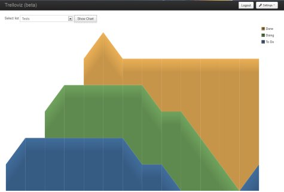

Welcome to Trelloviz.
Since a few weeks, I'm a happy employee (switched employer) and working in a team, practicing the Agile Manifesto. In detail, we're using Kanban as our primary software development methodology.
For organizing our lists and cards we're using Trello, which is a great tool (and piece of software). For getting a better feedback on how the flow is constant or not, there are some metrics out there. One of them is the cumulative flow diagram.

This project aims to visualize your flow, by using the Trello API to retrieving your card and list usage. In theory, all information can be extracted out of this actions over a given time span.